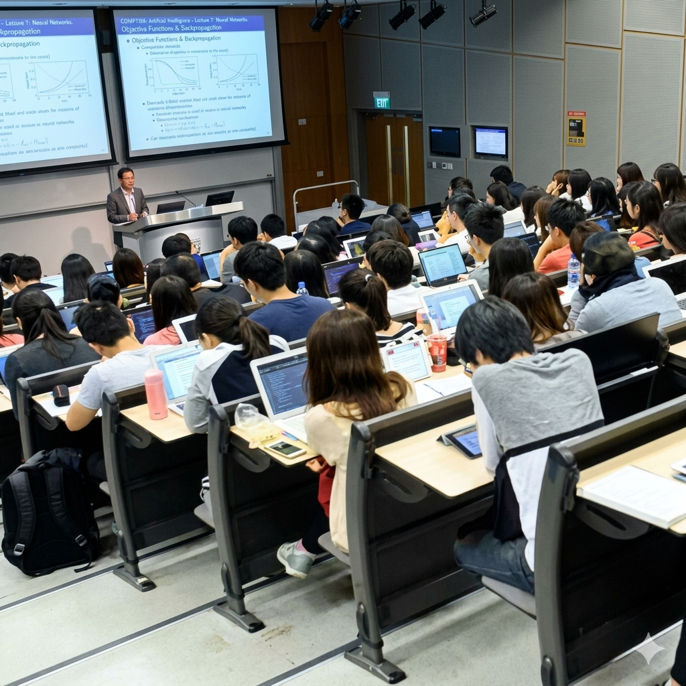
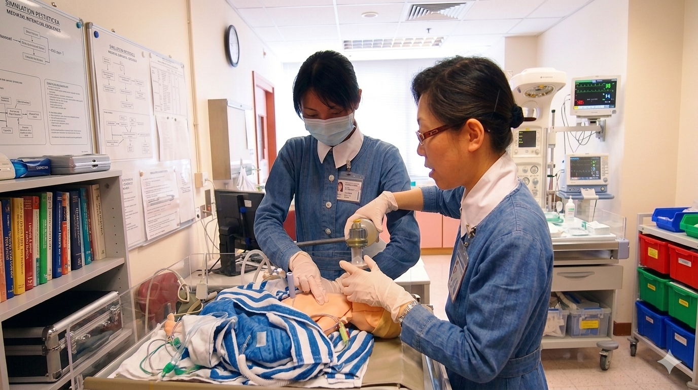
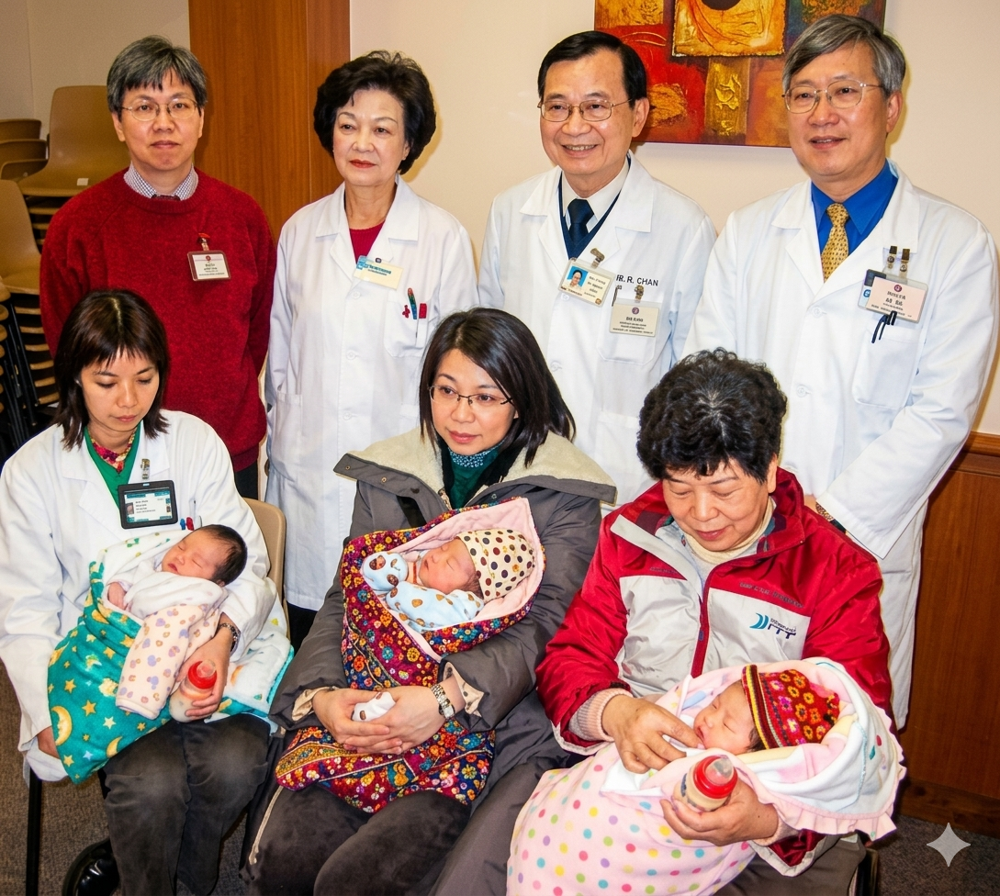
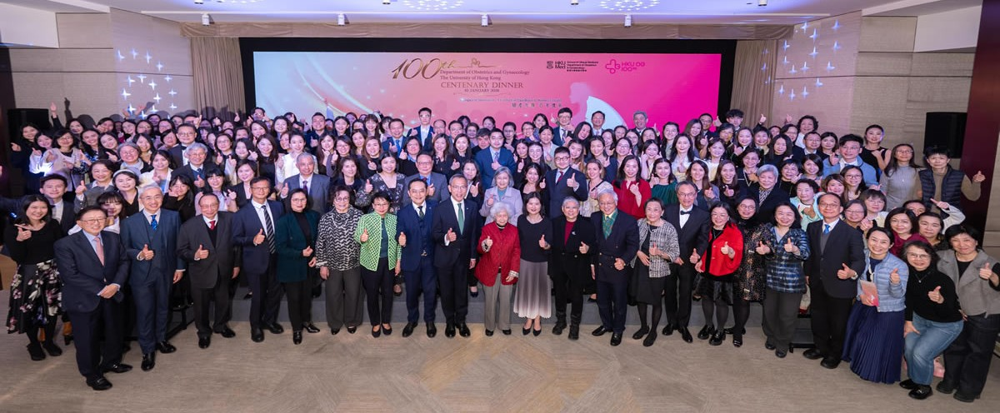

About Us
The Reproductive Medicine Division is recognised by both the Royal College of Obstetricians and Gynaecologists and Hong Kong College of Obstetricians and Gynaecologists for subspecialty training in Reproductive Medicine. It provides a tertiary referral service in reproductive medicine in Hong Kong. The Division is actively collaborating with a number of centres in Mainland China and other countries on various aspects of reproductive medicine. There are 10 PhDs within the division to provide support for basic scientific research.
History
1986Commencement of the Assisted Reproduction Unit in Queen Mary Hospital.

1988First successful delivery conceived through assisted reproductive technology with in-vitro fertilization (IVF).
1998Recognised as a subspecialist training centre in reproductive medicine by RCOG.


2003Recognised as a subspecialist training centre in reproductive medicine by the Hong Kong College of Obstetricians and Gynaecologists.
2004First successful delivery by thalassaemia couple conceived through assisted reproductive technology with
Preimplantation Genetic Diagnosis (PGD).


2026 Celebration40th Anniversary
of the
Reproduction Team.